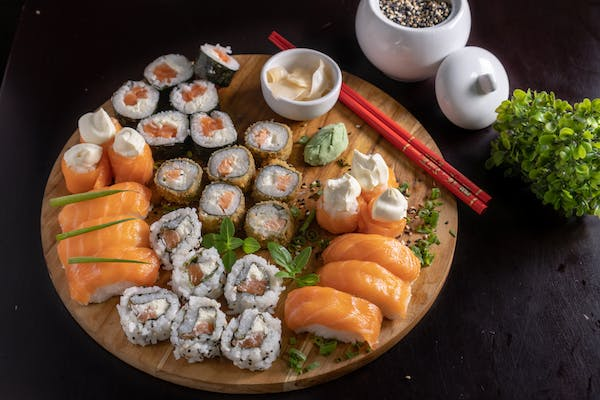
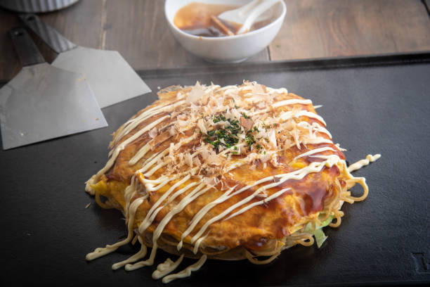
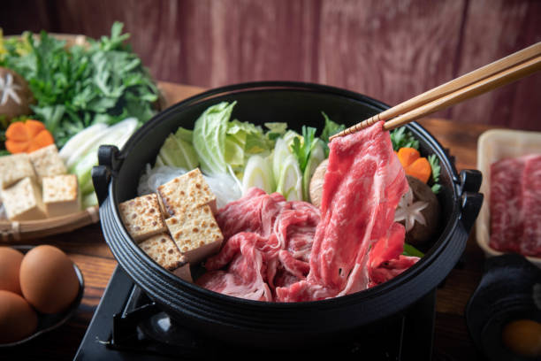

Restaurant
Restaurant
Quartier lointain
Bienvenue sur le site internet du restaurant :
Informations sur nos plats

Un rāmen est une recette de cuisine japonaise héritée de recettes chinoises et adaptée au goût des habitants de l'archipel nippon. Dans sa forme traditionnelle, il s'agit d'un plat de nouilles au bouillon agrémenté d'une garniture d'ingrédients animaux et végétaux (poissons, viandes, légumes, algues, œuf, etc.). Importés de Chine à la fin du XIXe siècle, ils sont à ce jour considérés comme faisant partie des plat emblématiques de la gastronomie japonaise.
Composition :
- Bouillon
- Oeufs
- Porc
- Nouilles

Le sushi est un plat traditionnel japonais, composé d'un riz vinaigré appelé shari combiné avec un autre ingrédient appelé neta qui est habituellement du poisson cru ou des fruits de mer.
Composition :
- riz
- wasabi
- algues séchées
- poisson

Les okonomiyakis sont des pancakes de farine, œufs et chou et votre choix de protéines et couverts d’une sauce épaisse proche de la sauce tonkatsu avec de la mayonnaise et des copeaux de bonite séchée.
L’okonomiyaki est servi chaud, dès la cuisson achevée. On le coupe souvent en parts, un peu comme une pizza, à l'aide d'une spatule pouvant aussi servir à sa préparation appelée kote
Composition :
- oeuf
- chou
- Katsuobushi
- Sauce tonkatsu

Le sukiyaki est un plat japonais, parfois appelé fondue japonaise. C'est un nabemono, une sorte de fondue, proche du shabu-shabu. On fait cuire du bœuf et des légumes crus, arrosés d'une sauce warishita, composée de mirin, de saké, de shoyu et de sucre.
Composition :
- oeuf
- chou
- sauce tonkatsu
- Katsuobushi

Notre Bubble Tea se compose le plus souvent de thé accompagné de boules de tapioca moelleuses ("boba" ou "perles"), mais il peut également être préparé avec d'autres garnitures
Composition :
- tapioca
- thé
- crème
- arômes